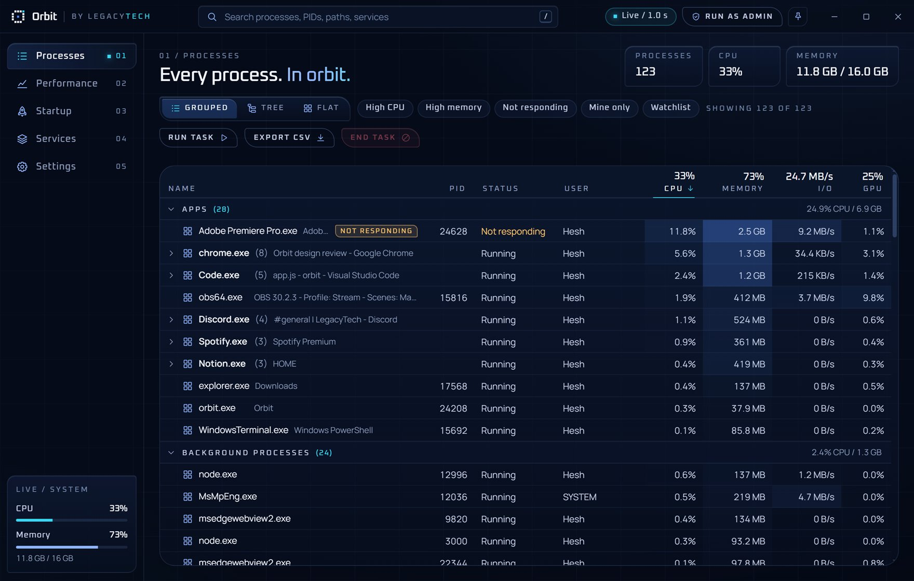
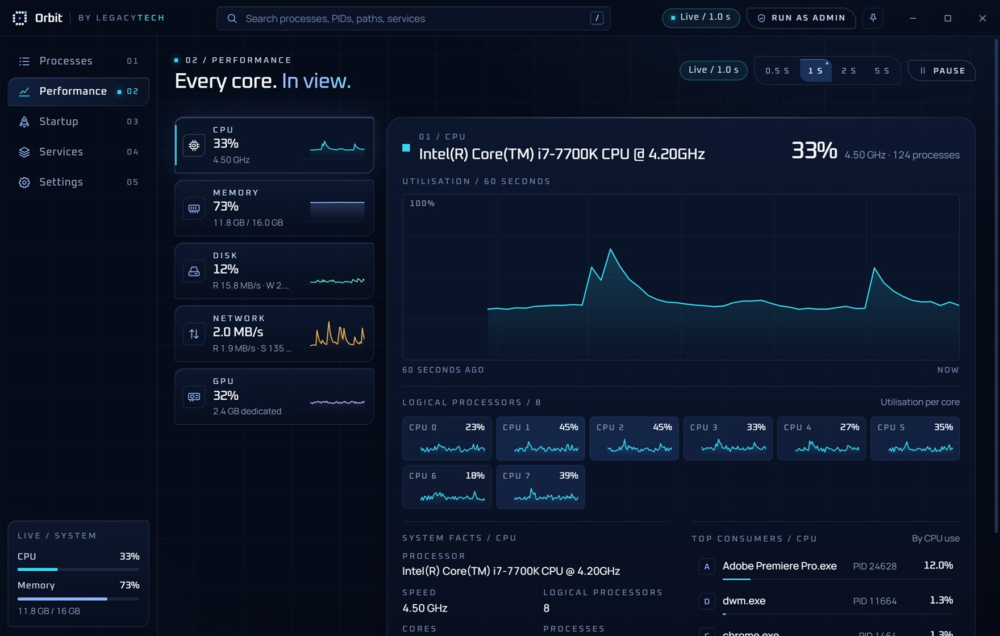
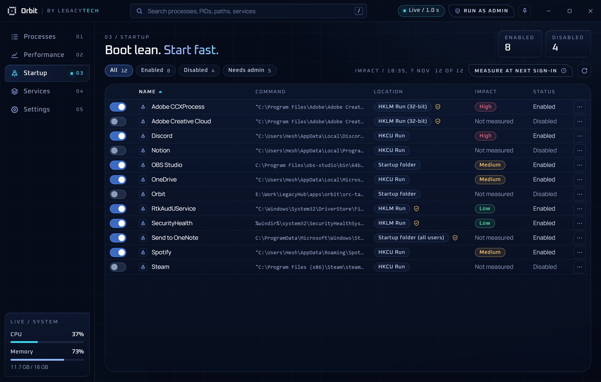
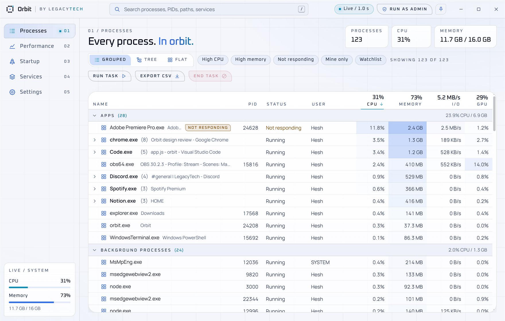
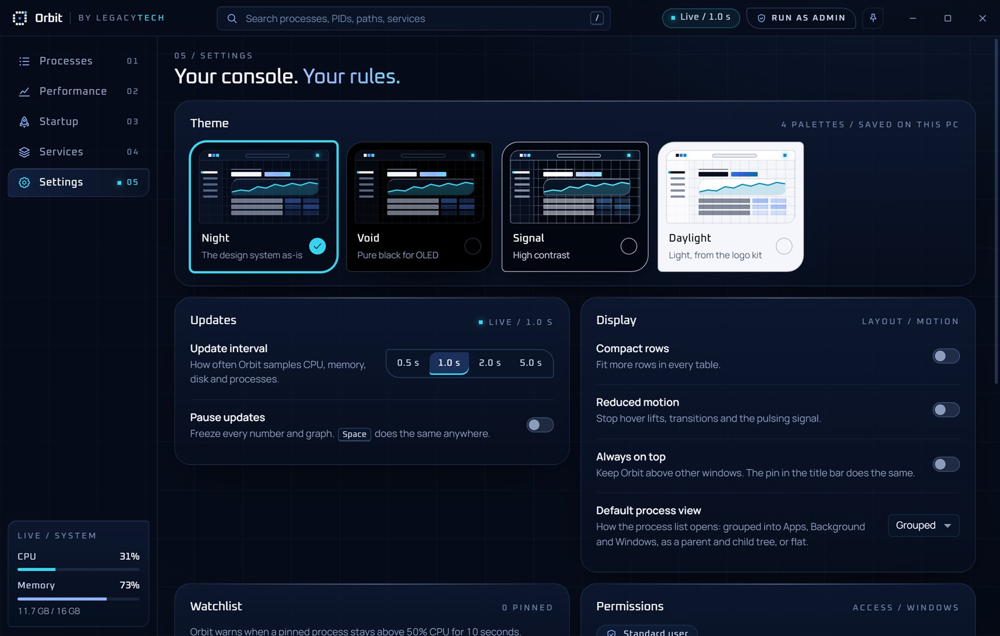

LegacyTech / Orbit 0.2.1
Every process. In orbit.
A task manager for Windows that looks the part and finds things fast. Search every process, restart Explorer in one click, see which startup apps slow you down, and switch between four themes.

01 / Features
Faster than hunting. Clearer than squinting.
Search everything
One box matches names, PIDs, window titles, file paths, command lines, users and services.
Command palette
Press Ctrl+K and type "end chrome" or "restart explorer". Keyboard first, mouse optional.
Restart, not just end
Restart any app with the same settings, run new tasks, and bring Explorer back if the taskbar disappears.
Startup impact
Turn startup apps on or off and measure which ones actually slow your sign-in: High, Medium or Low.
Live performance
CPU per core, memory, disk, network and GPU with 60 seconds of history and the top consumers.
Services in one place
Start, stop and restart services, filter by state, and jump straight to the process behind one.
Power tools
CPU affinity, priority, suspend and resume, a watchlist with CPU alerts, always on top and CSV export.
Four themes
Night, Void for OLED screens, high-contrast Signal and a light Daylight theme.




02 / Privacy
Runs locally. Sends nothing.
No account, no telemetry, no tracking. Orbit reads your PC's process list from Windows and keeps it on your PC. It only goes online when you ask it to, like "Search online" for a process name.
03 / Install
Two minutes. No admin needed.
- Download Orbit-Setup.exe and run it.
- Orbit isn't code-signed yet, so Windows may show "Windows protected your PC". Click More info, then Run anyway.
- Open Orbit from the Start menu. Use Run as admin inside Orbit when you need to manage system processes.
Needs Windows 10 or 11 (64-bit) and Microsoft Edge WebView2, which Windows 11 already has; the installer adds it on Windows 10 if missing. Uninstall any time from Settings > Apps.